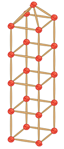

- 물음 1
- 물음 2
-
각 건축물은 어떤 도형으로 이루어져 있는지 말해 보세요.
예산타 마리아 델 피오레 성당 조토의 종탑은 사각기둥으로 이루어져 있습니다. 루브르 박물관 피라미드는 사각뿔로 이루어져 있습니다. 빅 벤 시계탑은 사각기둥과 사각뿔로 이루어져 있습니다.
-
건축가가 되어 다음과 같은 건축물을 만들어 보세요. 꼭짓점은 콩알 크기의 고무찰흙을, 모서리는 길이가 다른 두 종류의 막대를 사용하세요.
산타 마리아
델 피오레 성당
조토의 종탑
(이탈리아 피렌체)루브르 박물관
피라미드
(프랑스 파리)빅 벤 시계탑
(영국 런던)